Data Structures and Algorithms
with Object-Oriented Design Patterns in Java
Data Structures and Algorithms
with Object-Oriented Design Patterns in Java
Just as AVL trees are balanced binary search trees,
B-trees
are balanced M-way search trees. By imposing a balance condition ,
the shape of an AVL tree is constrained in a way which guarantees that
the search, insertion, and withdrawal operations are all
By imposing a balance condition ,
the shape of an AVL tree is constrained in a way which guarantees that
the search, insertion, and withdrawal operations are all  ,
where n is the number of items in the tree.
The shapes of B-Trees are constrained for the same reasons
and with the same effect.
,
where n is the number of items in the tree.
The shapes of B-Trees are constrained for the same reasons
and with the same effect.
Definition (B-Tree) A B-Tree of order M is either the empty tree or it is an M-way search tree T with the following properties:
- The root of T has at least two subtrees and at most M subtrees.
- All internal nodes of T (other than its root) have between
and M subtrees.
- All external nodes of T are at the same level.
A B-tree of order one is clearly impossible. Hence, B-trees of order M are really only defined for 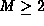. However, in practice we expect that M is large for the same reasons that motivate M-way search trees--large databases in secondary storage.
Figure  gives an example of a B-tree of order M=3.
By Definition ,
the root of a B-tree of order three has either two or three subtrees
and the internal nodes also have either two or three subtrees.
Furthermore, all the external nodes,
which are shown as small boxes in Figure ,
are at the same level.
gives an example of a B-tree of order M=3.
By Definition ,
the root of a B-tree of order three has either two or three subtrees
and the internal nodes also have either two or three subtrees.
Furthermore, all the external nodes,
which are shown as small boxes in Figure ,
are at the same level.
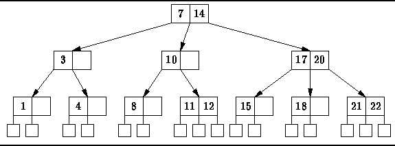
Figure: A B-tree of order 3.
It turns out that the balance conditions imposed by Definition
are good in the same sense as the AVL balance conditions.
That is, the balance condition guarantees that the height of B-trees
is logarithmic in the number of keys in the tree
and the time required for insertion and deletion operations
remains proportional to the height of the tree
even when balancing is required.
Theorem The minimum number of keys in a B-tree of order and height 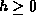 is 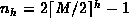.
extbfProof
Clearly, a B-tree of height zero contains at least one node.
Consider a B-tree order M and height h>0.
By Definition ,
each internal node (except the root) has at least  subtrees.
This implies the minimum number of keys contained in an internal node
is
subtrees.
This implies the minimum number of keys contained in an internal node
is  .
The minimum number of keys a level zero is 1;
at level one, 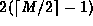;
at level two, 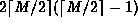;
at level three, 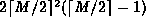; and so on.
.
The minimum number of keys a level zero is 1;
at level one, 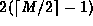;
at level two, 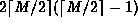;
at level three, 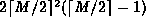; and so on.
Therefore the minimum number of keys in a B-tree of height h>0 is given by the summation
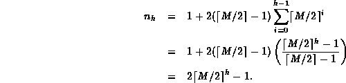
A corollary of Theorem is that the height, h,
of a B-tree containing n keys is given by
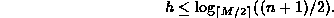
Thus, we have shown that a B-tree satisfies
the first criterion of a good balance condition--the height of B-tree with n internal nodes is  .
What remains to be shown is that the balance condition can be
efficiently maintained during insertion and withdrawal operations.
To see that it can,
we need to look at an implementation.
.
What remains to be shown is that the balance condition can be
efficiently maintained during insertion and withdrawal operations.
To see that it can,
we need to look at an implementation.
 Copyright © 1998 by Bruno R. Preiss, P.Eng. All rights reserved.
Copyright © 1998 by Bruno R. Preiss, P.Eng. All rights reserved.